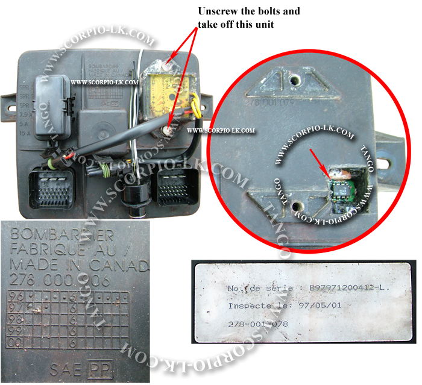

|
Sea-Doo (93C66) |
Top Previous Next |
|
Bombardier Sea-Doo
DS1990 is the 1-wire interfaced tablet chip and not supported by Tango. To make a key it is needed to read DS1990 with Orange5, Omega or other device and save a dump. During making a key Tango will ask for this dump and writes it into the ECU dump.

|